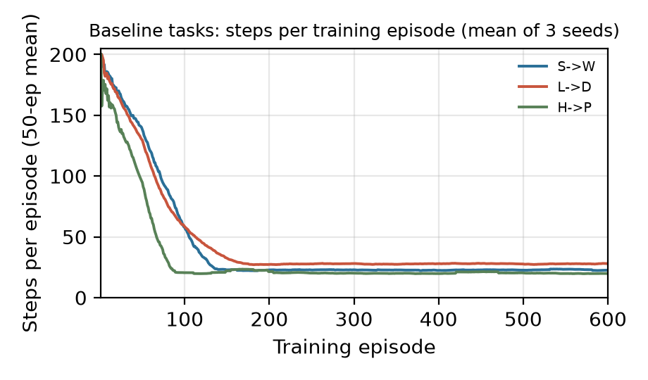
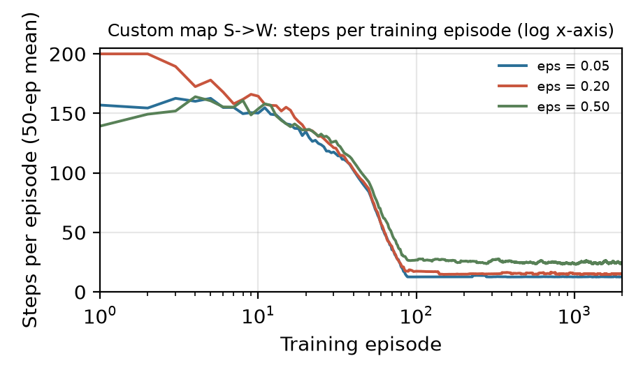
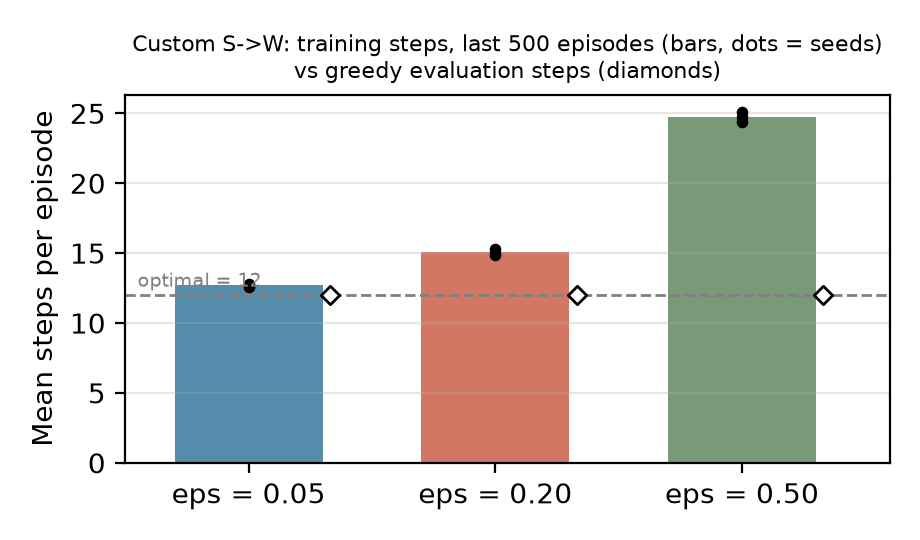

Formulation. State: the robot's cell (row, column) on a traversable square (walkway or building letter).
Initial state: the start entrance's cell, e.g. S = (1, 1). Actions: UP, DOWN, LEFT, RIGHT.
Transition model: deterministic; a move shifts the position by one cell, and a move into a wall or off the map leaves the position unchanged
(search uses campus.neighbors, which only returns moves that change the cell, so no-op moves are never generated).
Goal test: the state equals the destination entrance's cell; other building letters are ordinary traversable cells.
Path cost: number of moves, each costing 1. Search sees the complete map.
Why BFS is optimal here. BFS removes nodes in non-decreasing order of depth. Every action costs 1, so depth equals path cost, and the first time the goal is removed from the FIFO frontier it has the fewest moves of any route. Because the state space is finite and BFS keeps a parent table of discovered states, it also terminates on every map.
Manhattan heuristic. h(s) = |rs − rg| + |cs − cg|. Each move changes either the row or the column by exactly one, so any route needs at least |Δr| + |Δc| moves. Walls can only make the real route longer, so h never overestimates (admissible). It is also consistent: one move changes h by at most 1, the cost of that move.
Implementation. A* keeps a heap of (f, insertion number, g, state) with f = g + h, so equal-f ties are broken first-in first-out. It stores the best known g and parent for each state. A strictly cheaper route updates both and pushes a new entry. A popped entry whose g is larger than the best known g is stale and is skipped. The goal test happens when a non-stale entry is removed, and a node is counted as expanded when its successors are generated. If start equals goal, it returns [start] with zero expansions; if the frontier empties, it returns None.
| Map | Delivery task | BFS route length | A* route length | BFS expanded | A* expanded | A* saving |
|---|---|---|---|---|---|---|
| Baseline | S Student Center → W Walton Hall | 18 | 18 | 67 | 22 | 67% |
| Baseline | L Halle Library → D Downing Hall | 22 | 22 | 79 | 62 | 22% |
| Baseline | H Pray-Harrold → P Putnam Hall | 16 | 16 | 41 | 16 | 61% |
| Detour | S Student Center → W Walton Hall | 26 | 26 | 70 | 51 | 27% |
| Detour | L Halle Library → D Downing Hall | 22 | 22 | 65 | 60 | 8% |
| Detour | H Pray-Harrold → P Putnam Hall | 16 | 16 | 41 | 16 | 61% |
results/search/search_results.csv).Comparison. BFS and A* returned routes of equal length in all six cases, as expected: both are optimal on unit-cost maps (A* because h is admissible and consistent). A* never expanded more nodes here, but the size of the saving depends on how well h matches the real distance. On H→P the route is nearly a straight run, h is exact along it, and A* expands only the 16 nodes on the path. On L→D, h(L) = 14 while the true distance is 22: the wall to Library's right forces a long detour up and around. Every cell whose f is below 22 must still be expanded, so A* saves only 22% (baseline) and 8% (detour). The closure at (3, 6) lengthens S→W from 18 to 26. The direct route is blocked, the error in h grows, and A*'s saving drops from 67% to 27%. The same closure removes a region BFS used to explore on L→D, so BFS expands fewer nodes there (79 → 65). A* is not guaranteed to expand fewer nodes. With a poor heuristic, unlucky tie-breaking among f = C* nodes can make it expand as many as BFS, and each A* expansion also costs more because of the heap.
Setup. The Q-table is a dictionary keyed by (state, action), and unseen pairs count as 0.0. epsilon_greedy picks a uniform random action with probability ε; otherwise it picks uniformly among actions tied for the highest Q-value. q_learning_update uses the target y = r on terminal transitions and y = r + γ maxa' Q(s', a') otherwise, with unseen actions in the max counting as zero. It then applies Q ← Q + α(y − Q) to one entry. All baseline runs use the starter defaults: 2,000 training episodes, 100 greedy evaluation episodes (ε = 0, learning frozen), a 200-action limit, α = 0.3, γ = 0.95, constant ε = 0.2, no slip, and seeds 0, 1, 2 (9 independent runs). Extra measures were computed from the raw CSVs with analyze_results.py (results/training_metrics.csv).
| Task (optimal) | Train success | Timeouts / seed | First 20-success streak | First optimal episode | Steps, last 500 ep. | Eval success | Eval steps (every seed) | Eval return |
|---|---|---|---|---|---|---|---|---|
| S→W (18) | 99.2% | 17.0 | ep 33–42 | ep 92–116 | 22.5 | 100% | 18 | 22 |
| L→D (22) | 99.6% | 8.7 | ep 13–18 | ep 124–152 | 27.7 | 100% | 22 | 18 |
| H→P (16) | 99.2% | 15.3 | ep 33–40 | ep 49–73 | 20.1 | 100% | 16 | 24 |
Observations. All nine runs learned an optimal greedy policy. Evaluation success was 100% for every seed, and every evaluation episode used exactly the BFS-optimal number of steps (18, 22, 16), giving returns of 40 − L = 22, 18, 24 with zero variance across seeds. Learning is fast. The early episodes hit the 200-action limit, but nearly all timeouts happen within the first ~40 episodes (one H→P seed had a stray timeout at episode 149). Steps per episode fall below 30 by about episode 90 (H→P) to 180 (L→D), as Figure 1 shows. H→P is learned first because its goal is closest to the start, so random exploration reaches it soonest.
Training performance stays below evaluation performance because ε = 0.2 is never decayed. In the last 500 episodes the agent averages 22.5 / 27.7 / 20.1 steps against optima of 18 / 22 / 16. The fraction of training episodes that follow an optimal route is 5.7% / 2.8% / 7.5%. This closely matches the probability that every step of an L-step route picks the greedy action, (1 − 3ε/4)L = 5.4% / 2.8% / 7.4%. The policy itself is optimal; the gap comes only from exploration noise, and setting ε = 0 in evaluation removes it.

############### #S...........W# #.#####.#####.# #.#####.#####.# #.#.###.#####.# #.#.###.#####.# #.#.###.#####.# #L...........D# #.#####.#####.# #.#####.#####.# #.#####.#####.# #.#####.#####.# #.#####.#####.# #H.....P......# ###############
Map (maps/my_campus.txt, 15 × 15). Three vertical corridors (columns 1, 7, 13) cross three horizontal corridors (rows 1, 7, 13). Together they form a grid of rectangular loops, for example S (1,1) → (1,7) → (7,7) → L (7,1) → S. The dead end is the stub at column 3, rows 4–6, which opens only from (7,3) on the middle corridor. All six letters appear exactly once and the border is solid.
Route choices for S→W. The direct route along row 1 takes 12 moves. The alternatives go down a vertical corridor to row 7 and back up column 13: via column 7 (24 moves), via column 1 past L (24 moves), or via row 13 (36 moves). The dead end is reachable only from the alternative routes. A learner that strays down column 1 or 7 can waste moves in the loop or the stub. BFS finds the 12-move route after expanding 38 nodes, because it spreads down all three corridors. A* finds the same 12-move route expanding only 12: h is exact along row 1, and stepping down any corridor raises f by 2.
(i) Question and prediction. How does the exploration rate ε affect learning speed, training performance, and the quality of the final greedy policy on the custom S→W task? Prediction before running: ε = 0.05 would collect the most reward during training but might under-explore, settle on a 24-move loop route, and evaluate below optimal. ε = 0.5 would explore thoroughly but waste many actions, giving the lowest training return. ε = 0.2 would sit in between, and all settings would succeed in evaluation.
(iii) Method. Only ε was changed (0.05, 0.2, 0.5; output folders results/custom_e005, custom_e020, custom_e050). Everything else stayed at the Part B defaults: same map and S→W task, α = 0.3, γ = 0.95, slip 0, 2,000 training episodes, 200-action limit, a fresh Q-table for each seed 0, 1, 2, and greedy evaluation (ε = 0, frozen table) over 100 episodes per seed. summarize_results.py was run on each folder, and analyze_results.py computed the measures below from the raw training and evaluation CSVs.
| ε | Train success | Timeouts / seed | Total training actions | First optimal episode | Steps, last 500 ep. | Return, last 500 ep. | Optimal-route share, last 500 | Eval success / steps / return |
|---|---|---|---|---|---|---|---|---|
| 0.05 | 99.4% | 13.0 | 28,950 | ep 30–42 | 12.7 | 27.3 | 65.3% (pred. 63.2%) | 100% / 12 / 28 |
| 0.20 | 99.3% | 13.3 | 34,109 | ep 39–47 | 15.1 | 24.9 | 14.9% (pred. 14.2%) | 100% / 12 / 28 |
| 0.50 | 99.2% | 16.0 | 53,029 | ep 369–556 | 24.7 | 15.3 | 0.4% (pred. 0.4%) | 100% / 12 / 28 |


(iv) Findings. In evaluation, ε made no difference. All nine runs reached 100% success along the 12-move row-1 route (return 28), with zero spread across seeds. The setting mattered only during training. Higher ε produced longer training episodes (12.7 → 15.1 → 24.7 steps over the last 500 episodes), lower training return (27.3 → 24.9 → 15.3), and about 1.8× more total actions at ε = 0.5 than at 0.05. The early learning phase was almost identical: the curves in Figure 2 overlap until about episode 80, and the first 20-success streak began between episodes 30 and 38 for every setting. With ε = 0.5 the agent rarely completed a perfect run (first at episodes 369–556) even though its greedy policy was already optimal.
(v) Discussion. The prediction about training cost was right; the prediction about under-exploration was wrong. ε = 0.05 never locked onto a loop route. The reason is that every action costs −1 while unseen Q-values start at 0. Any action the agent has tried along a non-goal path drops below zero, so the greedy rule itself prefers untried actions ("optimism under uncertainty"). That built-in exploration was enough on this small, deterministic map, which made extra random exploration unnecessary. The match between the observed optimal-route share and (1 − 3ε/4)12 confirms that the training gap is pure exploration noise rather than a worse policy. A few runs were not perfectly clean. Timeouts were similar at every ε (13–16 per seed, mostly in the first ~40 episodes while the table was empty). With ε = 0.05 none occurred after episode 35, but higher ε produced isolated late failures, the latest at episode 708 (ε = 0.2) and 286 (ε = 0.5), when a run of random actions pushed the robot into a long excursion. Overall, constant ε mainly sets a trade-off between training cost and robustness. On this map a small ε was best, but a harder task with sparser rewards, stochastic slips, or longer dead ends would likely need more exploration or a decaying ε.